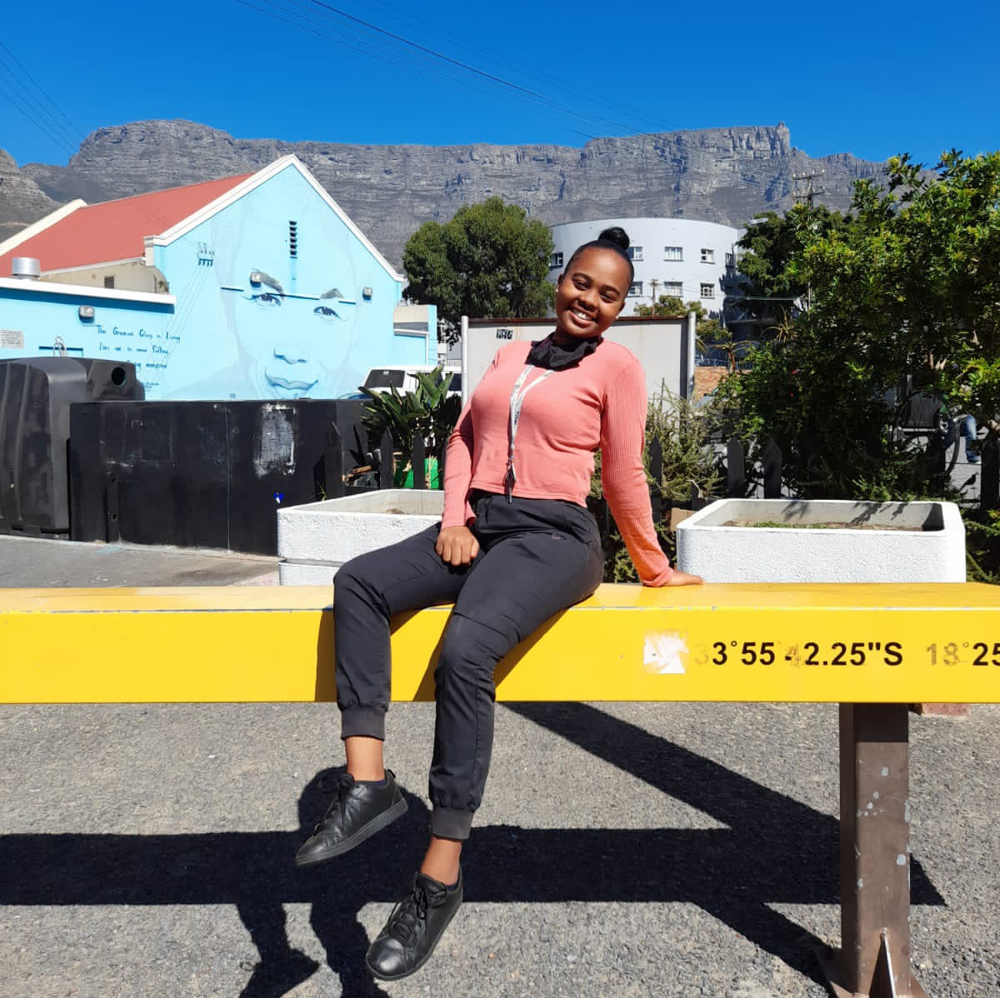

Annelize Joubert
Which City
.jpg)
Paris
The French capital is one of the most romantic cities in Europe and one of the world's most visited cities. It is a beautiful and cultural city, very walkable, with great sights, and it has been a source of inspiration for many writers, artists, and filmmakers. Paris is the city of love, its always been a dream to go have a vacation there. The beautiful gothic facade of Notre Dame Cathedral is an icon of the Paris skyline. Built in the 14th century, many mass is still celebrated today, and if you visit at certain times during the day, you can even hear the organ playing or choirs singing.
Foreign Language
Spanish is one of the most popular languages for people to try and learn, with somewhere in the region of 20 million students currently studying it in some capacity. The language sounds beautiful, is widely used and has a number of other benefits, which combine to make it one of the stand out options available.
| English: | Spanish: |
|---|---|
| Each new chapter of our lives requests an old part of us to fall and a new part of us to rise. | Cada nuevo capítulo de nuestras vidas exige que una parte vieja de nosotros caiga y una nueva parte de nosotros se levante. |
| You can tell a lot about a person by what they choose too see in you. | Puedes decir mucho sobre una persona por lo que eligen ver en ti. | Work hard push yourself because no one else is going to do it for you | Trabaja duro, esfuérzate porque nadie más lo hará por ti |